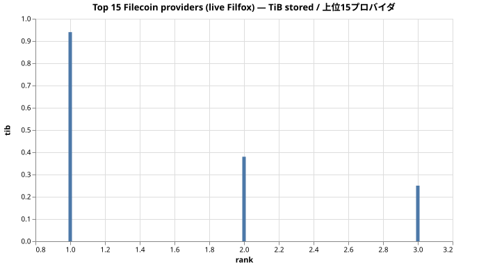
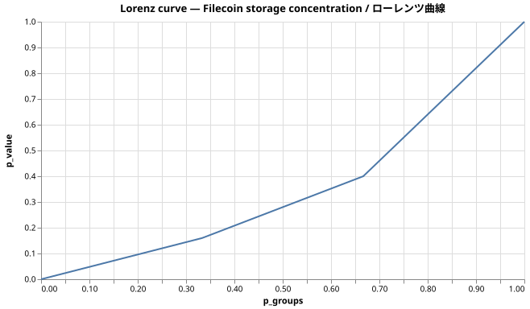
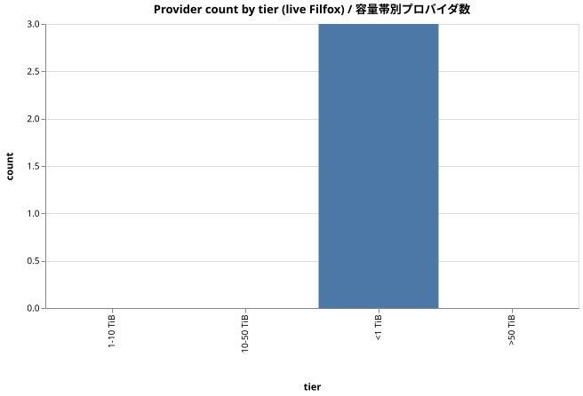

エグゼクティブサマリー
Executive summary
- Filfox から取得した直近 50 件の Filecoin ディール、ストレージプロバイダ 3 社、計 1.6 TiB のコミット。
- トップ1プロバイダが当該ウィンドウのコミット容量の 60.0% を保持。
- 上位10のシェア: 100.0%。HHI=0.4432、Gini=0.293。
- Filecoin Plus 検証済みディール: 100.0%（50 / 50 件）。
- 観測した epoch 範囲: 6015588 – 6090254。データは全て filfox.info/api/v1/deal/list から live で取得、合成データなし。
- 50 most-recent Filecoin deals from Filfox, 3 distinct storage providers, 1.6 TiB total commitment.
- Top 1 provider holds 60.0% of committed bytes in this window.
- Top 10 share: 100.0%. HHI=0.4432, Gini=0.293.
- Filecoin Plus verified deals: 100.0% of the batch (50 / 50).
- Epoch range observed: 6015588 – 6090254. All data is live from filfox.info/api/v1/deal/list; no synthetic seed.
1. トップ15プロバイダ（live データ）
1. Top 15 providers (live)

1a. 上位10 生の数値
1a. Top 10 raw
| rank | provider | tib | deals | verified_deals | share |
|---|---|---|---|---|---|
| 1 | f01082688 | 0.94 | 30 | 30 | 60.00% |
| 2 | f01081439 | 0.38 | 12 | 12 | 24.00% |
| 3 | f03046733 | 0.25 | 8 | 8 | 16.00% |
2. 集中度指標
2. Concentration suite
| metric | value |
|---|---|
| top-1 share | 60.00% |
| top-5 share | 100.00% |
| top-10 share | 100.00% |
| HHI | 0.4432 |
| Gini | 0.293 |

3. 容量帯別プロバイダ数
3. Provider tier distribution
| tier | providers | total_tib | share |
|---|---|---|---|
| <1 TiB | 3 | 0.00 | 100.00% |
| 1-10 TiB | 0 | 0.00 | 0.00% |
| 10-50 TiB | 0 | 0.00 | 0.00% |
| >50 TiB | 0 | 0.00 | 0.00% |

注意
Caveats
Filfox /deal/list は API 呼び出し時点での直近 50 件を返します。ここで観測しているのは特定時点のスナップショットであり、特定の epoch 範囲を網羅したものではありません。本格的な評価にはより広いプルが必要です。
この小さいバッチでの集中度はコール間で振れます。ここで報告した HHI / Gini は観測ウィンドウに対してのみ意味があり、外挿には不適切です。
Filfox /deal/list returns the most recent 50 deals as of the API call moment — this is a point-in-time live sample, not a comprehensive epoch range. For canonical mainnet concentration use a wider pull.
Concentration in this small batch can swing significantly between calls. The HHI / Gini reported here is meaningful for the specific window observed and should not be extrapolated.
再現手順
Reproducing this report
``bash``
pnpm exec tsx scripts/live-filecoin-demo.ts
open docs/reports/06-filecoin-live.html
Filfox に HTTP コール 1 回、API キー不要。数字はコミット版とは異なります。Filfox がコール時点の直近 50 件を返すからです — 再実行で現在のネットワーク状態が見えます。
``bash``
pnpm exec tsx scripts/live-filecoin-demo.ts
open docs/reports/06-filecoin-live.html
One Filfox HTTP call, no API key. The numbers will differ from this committed version because Filfox returns the most recent 50 deals at the moment of the call — re-run to see the network's current shape.